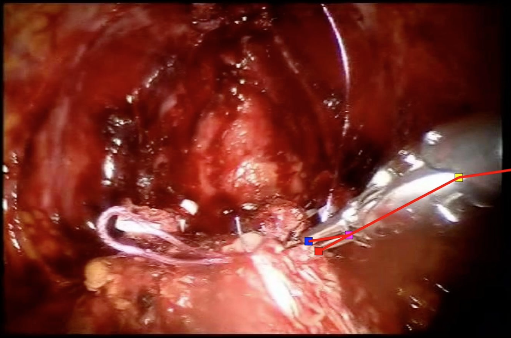
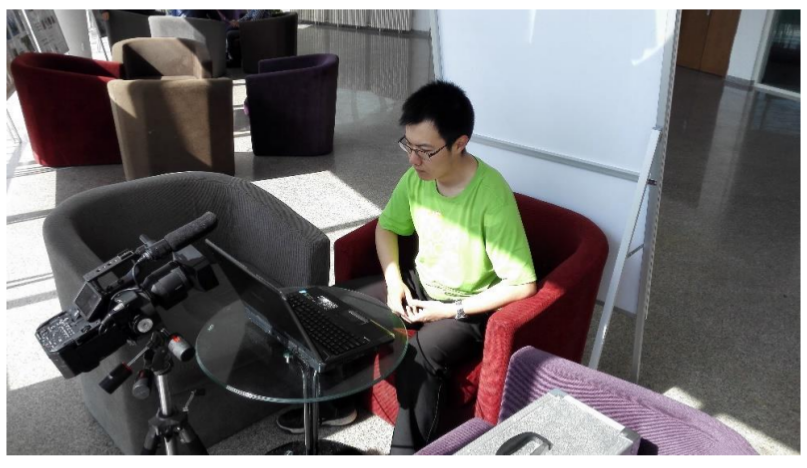

Yunfan Liu – Projects
Work Published
|
|
Facial Expression Recognition and Generation using Sparse Autoencoder |
Work Submitted

|
Learning to Detect Humans-Objects Interactions |
|  |
Video Analysis of Skill and Technique (VAST) |
Past Projects
|  |
[UGrad Thesis] Vision-based Micro-Expression Analysis |